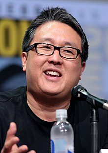

Lee was born in 1969 at Wyckoff Heights Hospital, in Brooklyn, New York, to Korean parents.
His father, a doctor, and his mother, had been in America for just three years and were still acclimating.
Lee's mother, a devout Christian, nurtured hopes that he would become a minister.
Lee graduated Walter Johnson High School in 1987.
During his undergraduate studies at George Washington University, Lee interned at the law firm Fried Frank Harris Shriver & Jacobson.
After graduating GWU, Lee attended law school at American University Washington College of Law where he prepared for a career in corporate law.
Main article: Vertigo Entertainment
In the fall of 2001, after setting up film projects at all the major studios, Lee left BenderSpink and joined Doug Davison to create Vertigo Entertainment. When working on a project together, Lee did the selling and Davison handled the follow-up work.
Lee noted that in the beginning, the hardest thing was making contacts abroad.
Lee's approach to making deals involved explaining to Asian distributors that their films would probably not sell in America because of their subtitles and that they would make more money by selling remake rights.
Then he assured the rights holder that he would protect them by representing them for free (the American studio would pay his fee when the film was made).
Once Lee had secured the right to negotiate for an Asian company, he told the studios to regard the film as a script that someone had taken the trouble to film, and that had been tested and proved a hit in its home country.
Lee earned his first motion picture producing credit on Gore Verbinski's 2002 blockbuster The Ring. He went on to produce the 2004 haunted house horror film The Grudge, which starred Sarah Michelle Gellar and was based on the 2002 Japanese film Ju-on: The Grudge, which was directed by Takashi Shimizu. The box office hit held the record for biggest horror opening weekend following its October 2004 release.
The Grudge 2 was released in October 2006, starring Amber Tamblyn and Gellar, and directed by Shimizu.
It topped the box office at $22 million on its opening weekend.
Also in October 2006, The Departed, a crime thriller from Warner Bros., directed by Martin Scorsese and starring Leonardo DiCaprio, Matt Damon and Jack Nicholson, was released, grossing $27 million in its opening weekend.
It was Scorsese's biggest opening ever.
The Departed later went on to win Best Picture at the 79th Academy Awards.
He worked as executive producer of the Uruguay short film Ataque de Pánico! alongside Doug Davison.